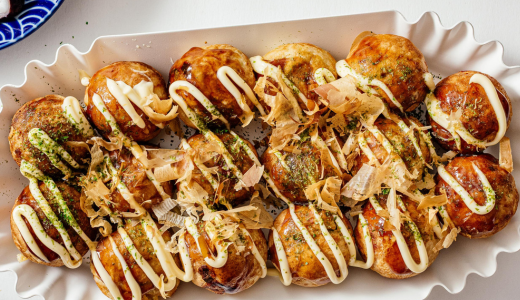

Takoyaki
(Bolinhas com polvo — versão adaptada dá para usar frango ou salsicha)
Ingredientes:
- Massa: farinha, água, ovo, molho de soja
- Cubinhos de polvo (ou frango/salsicha)
- Cebolinha
- Gengibre em conserva (opcional)
- Molho takoyaki (ou barbecue suave)
Modo de preparo:
- Misture a massa até ficar bem líquida.
- Aqueça a forma de takoyaki (ou use frigideirinha de bolinhas).
- Despeje a massa e coloque os pedaços de polvo.
- Vá virando até formar bolinhas perfeitas.
- Finalize com molho e maionese.

VOLTAR